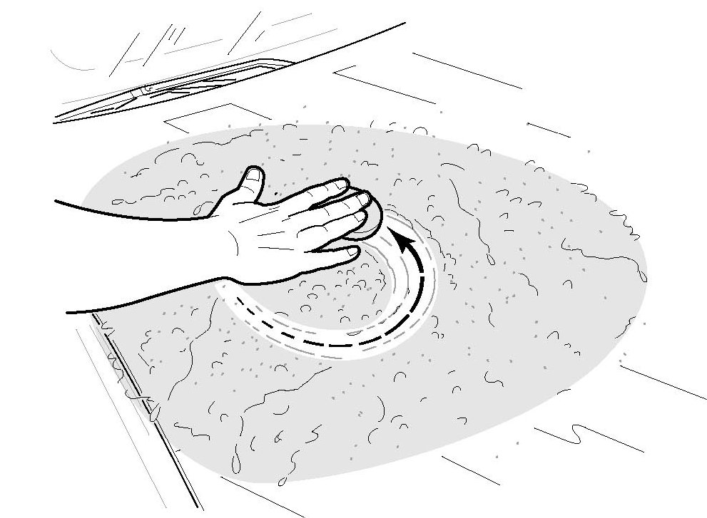

Paint - Environmental Fallout Damage
99-033January 26, 2007
Applies To:
ALL
Paint Damage From Environmental Fallout
(Supersedes 99-033, dated August 9, 1999, to update the information marked by the black bar and asterisks
SYMPTOM
The exterior paint surface does not feel smooth after the vehicle is washed.
PROBABLE CAUSE
Environmental fallout (airborne metallic particles, tree sap, paint overspray, road tar, insect residue, etc.) has adhered to the exterior paint surface.
NOTE:
This form of paint damage should not be confused with acid rain damage. Unlike environmental fallout damage, acid rain damage appears on the paint surface as pits or water spots-possibly black or brown in the center-which may feel smooth to the touch.
PREVENTION
The shipping wax/wrap guard applied to the vehicle at the factory provides the best protection for the paint finish from environmental fallout and acid rain damage. American Honda strongly recommends that you leave the shipping wax/wrap guard on the vehicle for as long as possible. Your dealership is responsible for maintaining the vehicle's finish after the shipping wax/ wrap guard is removed.
CORRECTIVE ACTION
Select a product line from one of the manufacturers listed in REQUIRED MATERIALS to clean the paint surface and to wax it after cleaning. Make sure you follow the manufacturer's instructions for each of the products you use.
REQUIRED MATERIALS
Each of the clays listed should do at least three vehicles.
WARRANTY CLAIM INFORMATION
In warranty:
American Honda will reimburse for this repair only under these conditions:
^ It is done during TQI
^ No more than 30 days have elapsed since the vehicle was received at the dealership (according to the date noted on the motor carrier's bill of lading)
Operation number: 812355
Flat rate time: 1.0 hour
Failed P/N: PDI-PAINT
*Defect code: 08103
Symptom code 08811*
Skill level: Repair Technician
NOTE:
When submitting the claim, make sure you enter the vehicle's date of receipt in the customer contention comment section. *The claim will be rejected without this information.*
REPAIR PROCEDURE
1. Wash and dry the vehicle out of direct sunlight.
2. Tear off a piece of clay. Shape the piece with your hands into a flat disk about 3 inches in diameter.

3. Spray a 2-to 3-square-foot area of the affected panel with the manufacturer's lubricant.
4. Clean a 1-square-foot section of the sprayed area by rubbing it with the clay.
5. Check your work by running your fingers over the cleaned and lubricated surface to feel for any remaining contamination.
^ If you feel any particles on the cleaned surface fold the clay in half, knead it back into a disk shape, clean the section again, and recheck your work.
^ If the cleaned surface feels smooth, fold the clay in half, knead it back into a disk shape, and go to step 6.
NOTE:
You must carefully fold and knead the clay to keep a clean side next to the paint surface. Never use clay that has fallen on the ground. Any small pieces of dirt or sand that imbed in the clay will scratch the paint surface. If the clay falls on the ground, discard it and get a fresh piece.
6. Clean the remaining sections of the sprayed area (repeat steps 4 and 5).
7. Wipe the lubricant from all the cleaned sections with a clean terry cloth towel.
8. Clean the rest of the affected panel and any additional panels that need cleaning (repeat steps 3 thru 7).
9. Apply the manufacturer's recommended wax or glaze to all the cleaned panels.

Disclaimer